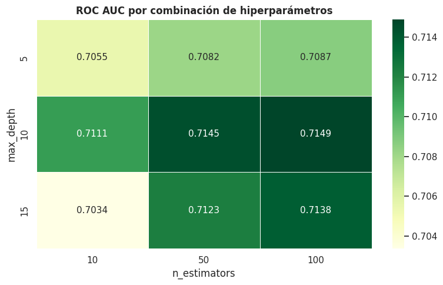
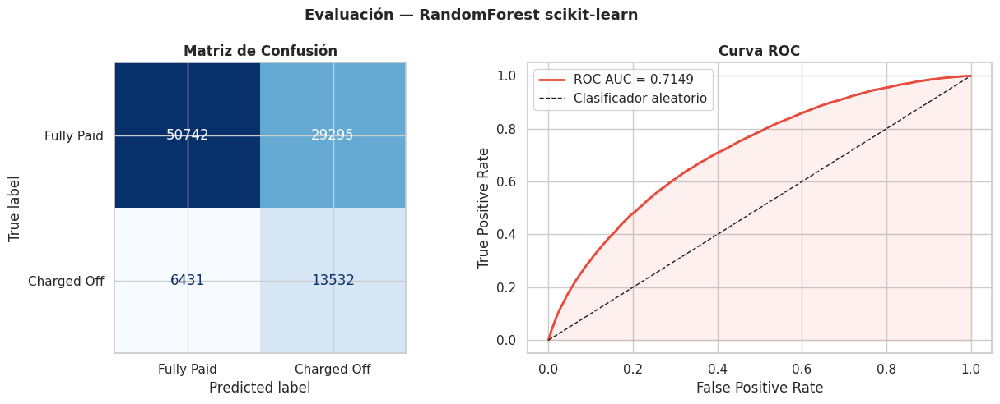
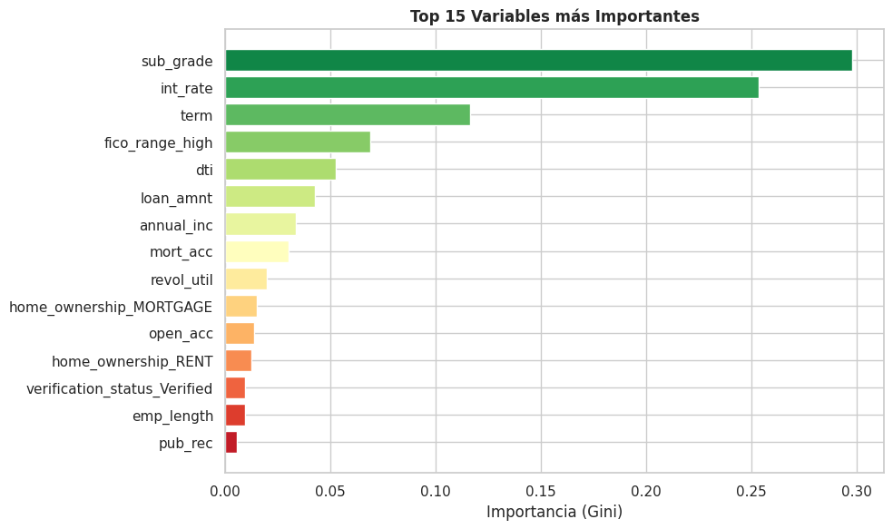

Preprocesamiento y Modelado con scikit-learn#
Librerías#
import pandas as pd
import numpy as np
import matplotlib.pyplot as plt
import seaborn as sns
import time
import warnings
from sklearn.model_selection import train_test_split
from sklearn.preprocessing import StandardScaler, OneHotEncoder, LabelEncoder
from sklearn.ensemble import RandomForestClassifier
from sklearn.metrics import (accuracy_score, precision_score, recall_score,
f1_score, roc_auc_score, confusion_matrix,
ConfusionMatrixDisplay, roc_curve)
warnings.filterwarnings('ignore')
sns.set_theme(style='whitegrid')
Carga del Dataset#
df = pd.read_csv('df_clean.csv', low_memory=False)
print(f'Shape : {df.shape}')
df.head(3)
Shape : (1345310, 93)
| id | loan_amnt | funded_amnt | funded_amnt_inv | term | int_rate | installment | grade | sub_grade | emp_title | ... | pub_rec_bankruptcies | tax_liens | tot_hi_cred_lim | total_bal_ex_mort | total_bc_limit | total_il_high_credit_limit | hardship_flag | disbursement_method | debt_settlement_flag | default | |
|---|---|---|---|---|---|---|---|---|---|---|---|---|---|---|---|---|---|---|---|---|---|
| 0 | 68407277 | 3600.0 | 3600.0 | 3600.0 | 36 months | 13.99 | 123.03 | C | C4 | leadman | ... | 0.0 | 0.0 | 178050.0 | 7746.0 | 2400.0 | 13734.0 | N | Cash | N | 0.0 |
| 1 | 68355089 | 24700.0 | 24700.0 | 24700.0 | 36 months | 11.99 | 820.28 | C | C1 | Engineer | ... | 0.0 | 0.0 | 314017.0 | 39475.0 | 79300.0 | 24667.0 | N | Cash | N | 0.0 |
| 2 | 68341763 | 20000.0 | 20000.0 | 20000.0 | 60 months | 10.78 | 432.66 | B | B4 | truck driver | ... | 0.0 | 0.0 | 218418.0 | 18696.0 | 6200.0 | 14877.0 | N | Cash | N | 0.0 |
3 rows × 93 columns
Parte 1: Preprocesamiento#
Selección de Variables#
FEATURES = [c for c in [
'loan_amnt', 'int_rate', 'fico_range_high', 'emp_length',
'annual_inc', 'purpose', 'home_ownership', 'dti',
'term', 'sub_grade', 'verification_status',
'open_acc', 'pub_rec', 'revol_util', 'mort_acc'
] if c in df.columns]
TARGET = 'default'
X = df[FEATURES].copy()
y = df[TARGET].copy()
NUM_COLS = X.select_dtypes(include='number').columns.tolist()
CAT_COLS = X.select_dtypes(include='object').columns.tolist()
print(f'Features : {len(FEATURES)}')
print(f'Numéricas : {NUM_COLS}')
print(f'Categóricas: {CAT_COLS}')
Features : 15
Numéricas : ['loan_amnt', 'int_rate', 'fico_range_high', 'emp_length', 'annual_inc', 'dti', 'open_acc', 'pub_rec', 'revol_util', 'mort_acc']
Categóricas: ['purpose', 'home_ownership', 'term', 'sub_grade', 'verification_status']
Submuestreo para entrenamiento#
SAMPLE_SIZE = 500_000
X_sample, _, y_sample, _ = train_test_split(
X, y, train_size=SAMPLE_SIZE, stratify=y, random_state=42
)
print(f'Muestra: {len(X_sample):,} filas')
print(f' Fully Paid (0): {(y_sample==0).sum():,} ({(y_sample==0).mean()*100:.1f}%)')
print(f' Charged Off (1): {(y_sample==1).sum():,} ({(y_sample==1).mean()*100:.1f}%)')
Muestra: 500,000 filas
Fully Paid (0): 400,187 (80.0%)
Charged Off (1): 99,813 (20.0%)
División Train/Test#
X_train, X_test, y_train, y_test = train_test_split(
X_sample, y_sample, test_size=0.20, random_state=42, stratify=y_sample
)
print(f'Train: {X_train.shape[0]:,} filas')
print(f'Test : {X_test.shape[0]:,} filas')
Train: 400,000 filas
Test : 100,000 filas
Codificación de Variables Categóricas#
label_cols = [c for c in ['sub_grade', 'term'] if c in CAT_COLS]
ohe_cols = [c for c in CAT_COLS if c not in label_cols]
le_encoders = {}
for col in label_cols:
le = LabelEncoder()
X_train[col] = le.fit_transform(X_train[col].astype(str))
X_test[col] = le.transform(X_test[col].astype(str))
le_encoders[col] = le
ohe = OneHotEncoder(sparse_output=False, handle_unknown='ignore', drop='first')
X_train_ohe = ohe.fit_transform(X_train[ohe_cols])
X_test_ohe = ohe.transform(X_test[ohe_cols])
ohe_names = ohe.get_feature_names_out(ohe_cols)
num_label = NUM_COLS + label_cols
X_train_enc = pd.concat([X_train[num_label].reset_index(drop=True),
pd.DataFrame(X_train_ohe, columns=ohe_names)], axis=1)
X_test_enc = pd.concat([X_test[num_label].reset_index(drop=True),
pd.DataFrame(X_test_ohe, columns=ohe_names)], axis=1)
print(f' Codificación completa — Shape: {X_train_enc.shape}')
Codificación completa — Shape: (400000, 32)
Escalado con StandardScaler#
scaler = StandardScaler()
X_train_enc[NUM_COLS] = scaler.fit_transform(X_train_enc[NUM_COLS])
X_test_enc[NUM_COLS] = scaler.transform(X_test_enc[NUM_COLS])
Parte 2: Modelado#
Búsqueda Manual de Hiperparámetros#
n_estimators_list = [10, 50, 100]
max_depth_list = [5, 10, 15]
results = []
print(f'{"n_est":>6} {"max_d":>6} {"ROC_AUC":>10} {"Tiempo(s)":>10}')
print('-' * 38)
for n_est in n_estimators_list:
for max_d in max_depth_list:
rf = RandomForestClassifier(
n_estimators = n_est,
max_depth = max_d,
class_weight = 'balanced',
random_state = 42,
n_jobs = -1
)
t0 = time.time()
rf.fit(X_train_enc, y_train)
t_fit = time.time() - t0
proba = rf.predict_proba(X_test_enc)[:, 1]
auc = roc_auc_score(y_test, proba)
results.append({'n_estimators': n_est, 'max_depth': max_d,
'roc_auc': auc, 'train_time': t_fit, 'model': rf, 'proba': proba})
print(f'{n_est:>6} {max_d:>6} {auc:>10.4f} {t_fit:>10.2f}')
n_est max_d ROC_AUC Tiempo(s)
--------------------------------------
10 5 0.7055 0.31
10 10 0.7111 0.44
10 15 0.7034 0.60
50 5 0.7082 1.20
50 10 0.7145 1.93
50 15 0.7123 2.22
100 5 0.7087 2.29
100 10 0.7149 3.18
100 15 0.7138 4.39
Heatmap de resultados#
df_res = pd.DataFrame([{k: v for k, v in r.items() if k not in ('model', 'proba')}
for r in results])
pivot = df_res.pivot(index='max_depth', columns='n_estimators', values='roc_auc')
fig, ax = plt.subplots(figsize=(8, 5))
sns.heatmap(pivot, annot=True, fmt='.4f', cmap='YlGn',
linewidths=0.5, ax=ax, annot_kws={'size': 11})
ax.set_title('ROC AUC por combinación de hiperparámetros', fontweight='bold')
ax.set_xlabel('n_estimators')
ax.set_ylabel('max_depth')
plt.tight_layout()
plt.savefig('sklearn_01_heatmap.png', bbox_inches='tight')
plt.show()

Mejor Modelo#
best = max(results, key=lambda r: r['roc_auc'])
best_model = best['model']
print(f'Mejor configuración:')
print(f' n_estimators: {best["n_estimators"]}')
print(f' max_depth : {best["max_depth"]}')
print(f' ROC AUC : {best["roc_auc"]:.4f}')
t_pred_start = time.time()
y_pred = best_model.predict(X_test_enc)
y_pred_proba = best_model.predict_proba(X_test_enc)[:, 1]
t_pred = time.time() - t_pred_start
Mejor configuración:
n_estimators: 100
max_depth : 10
ROC AUC : 0.7149
Métricas#
acc = accuracy_score(y_test, y_pred)
prec = precision_score(y_test, y_pred)
rec = recall_score(y_test, y_pred)
f1 = f1_score(y_test, y_pred)
auc = roc_auc_score(y_test, y_pred_proba)
print('=' * 42)
print(' MÉTRICAS — RandomForest (sklearn)')
print('=' * 42)
print(f' Accuracy : {acc:.4f}')
print(f' Precision : {prec:.4f}')
print(f' Recall : {rec:.4f}')
print(f' F1-score : {f1:.4f}')
print(f' ROC AUC : {auc:.4f}')
print('-' * 42)
print(f' Tiempo entrenamiento: {best["train_time"]:.2f} s')
print(f' Tiempo predicción : {t_pred:.4f} s')
print('=' * 42)
==========================================
MÉTRICAS — RandomForest (sklearn)
==========================================
Accuracy : 0.6427
Precision : 0.3160
Recall : 0.6779
F1-score : 0.4310
ROC AUC : 0.7149
------------------------------------------
Tiempo entrenamiento: 3.18 s
Tiempo predicción : 0.1473 s
==========================================
Matriz de Confusión y Curva ROC#
fig, axes = plt.subplots(1, 2, figsize=(13, 5))
cm = confusion_matrix(y_test, y_pred)
ConfusionMatrixDisplay(cm, display_labels=['Fully Paid', 'Charged Off']).plot(
ax=axes[0], cmap='Blues', colorbar=False)
axes[0].set_title('Matriz de Confusión', fontweight='bold')
fpr, tpr, _ = roc_curve(y_test, y_pred_proba)
axes[1].plot(fpr, tpr, color='#e74c3c', lw=2, label=f'ROC AUC = {auc:.4f}')
axes[1].plot([0,1],[0,1],'k--', lw=1, label='Clasificador aleatorio')
axes[1].fill_between(fpr, tpr, alpha=0.08, color='#e74c3c')
axes[1].set_xlabel('False Positive Rate')
axes[1].set_ylabel('True Positive Rate')
axes[1].set_title('Curva ROC', fontweight='bold')
axes[1].legend()
plt.suptitle('Evaluación — RandomForest scikit-learn', fontsize=13, fontweight='bold')
plt.tight_layout()
plt.savefig('sklearn_02_evaluation.png', bbox_inches='tight')
plt.show()

Importancia de Variables#
importances = pd.Series(best_model.feature_importances_,
index=X_train_enc.columns).sort_values(ascending=False).head(15)
fig, ax = plt.subplots(figsize=(10, 6))
ax.barh(importances.index[::-1], importances.values[::-1],
color=sns.color_palette('RdYlGn_r', 15)[::-1], edgecolor='white')
ax.set_xlabel('Importancia (Gini)')
ax.set_title('Top 15 Variables más Importantes', fontweight='bold')
plt.tight_layout()
plt.savefig('sklearn_03_importance.png', bbox_inches='tight')
plt.show()

Guardar Métricas#
import json
metrics_sklearn = {
'Modelo' : 'RandomForest (sklearn)',
'n_estimators' : best['n_estimators'],
'max_depth' : best['max_depth'],
'Accuracy' : round(acc, 4),
'Precision' : round(prec, 4),
'Recall' : round(rec, 4),
'F1-score' : round(f1, 4),
'ROC_AUC' : round(auc, 4),
'Tiempo_train_s': round(best['train_time'], 2),
'Tiempo_pred_s' : round(t_pred, 4)
}
with open('metrics_sklearn.json', 'w') as f:
json.dump(metrics_sklearn, f, indent=2)
pd.DataFrame([metrics_sklearn])
| Modelo | n_estimators | max_depth | Accuracy | Precision | Recall | F1-score | ROC_AUC | Tiempo_train_s | Tiempo_pred_s | |
|---|---|---|---|---|---|---|---|---|---|---|
| 0 | RandomForest (sklearn) | 100 | 10 | 0.6427 | 0.316 | 0.6779 | 0.431 | 0.7149 | 3.18 | 0.1473 |